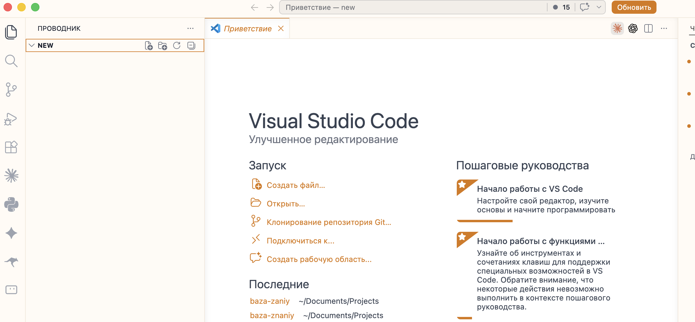
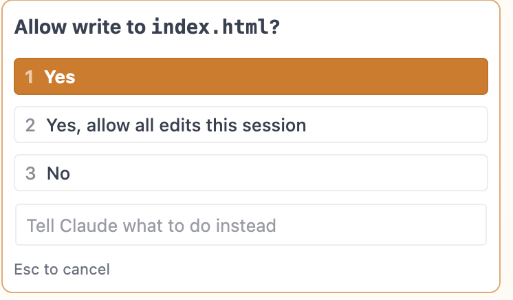
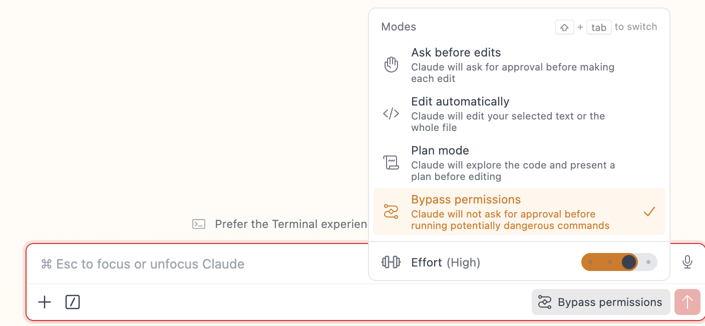

Первый запуск
VS Code установлен, Claude Code подключён — разобрали это в предыдущей статье. Теперь о том, что происходит дальше: как организовать проект, запустить первую задачу и настроить рабочее место так, чтобы не мешало лишнее.
Структура проекта
Claude Code всегда работает внутри папки — проекта. Это важно понять с самого начала: он видит только то, что находится в открытой папке. Это не ограничение, а удобство — Claude не лезет куда не просили.
Шаг первый — создай общую папку для всех проектов, например Projects. Удобно положить её на рабочий стол или в домашнюю папку.
Шаг второй — внутри Projects создай папку под конкретный проект: например, new, my-site или landing-page. Называй по-английски — кириллица в пути иногда вызывает ошибки.
Шаг третий — открой эту папку в VS Code: File → Open Folder, выбери папку проекта и нажми Open. Теперь Claude Code видит всё что внутри и готов работать.

Чистая структура с самого начала экономит много нервов потом. Один проект — одна папка. Без исключений.
Лайфхак: VS Code на русском
Если хочешь интерфейс на русском — нажми Cmd+Shift+X на Mac или Ctrl+Shift+X на Windows, в поиске набери russian, установи «Russian Language Pack» от Microsoft. Перезапусти VS Code — интерфейс станет на русском.
Первая команда
Пиши задачу обычным русским языком — никаких специальных синтаксисов учить не нужно. Например:
Создай простую HTML страницу с заголовком «Привет мир»
Как только введёшь команду, Claude Code начнёт спрашивать разрешение на каждое действие — создать файл, изменить строку, прочитать что-то. Вот как это выглядит:

Поначалу это нормально. Но быстро начинает бесить — соглашаться на каждый чих неудобно. Для этого есть Bypass Permissions.
Bypass Permissions — убрать постоянные вопросы
Нажми на кнопку режима внизу справа в панели Claude Code — выскочит меню. Там есть Bypass permissions — выбери его, и запросы исчезнут.

Если этого пункта нет — попроси Claude настроить за тебя. Просто скопируй промпт ниже и отправь в чат:
Включи мне режим Bypass Permissions с защитой от опасных команд: работать без подтверждений, но запретить удаление папок (rm -rf), force-push в гит, удаление веток, чтение секретных файлов (.env, credentials, токены, API-ключи). Настрой это правильным способом и объясни что добавил.
Claude сам создаст нужный файл настроек и пропишет защиту. Что это за файл и как он устроен — разберём в следующей статье, пока не вникай.
Bypass Permissions отключает запросы. Используй только в своих проектах — не давай Claude Code доступ к чужим файлам или системным папкам.
Режимы работы
В нижней части панели Claude Code есть переключатель режима. Он определяет как именно Claude будет вносить изменения — молча делать своё или спрашивать на каждом шаге.
Переключать можно клавишей Shift+Tab или кликом по кнопке режима внизу панели.
| Режим | Что делает | Когда использовать |
|---|---|---|
| Edit automatically | Читает файлы, редактирует, создаёт — без лишних вопросов | Основной режим для работы |
| Ask before edits | Перед каждым изменением файла показывает что собирается сделать и ждёт подтверждения | Когда хочешь контролировать каждый шаг |
| Plan Mode | Только составляет план — ни один файл не тронет, пока не разрешишь | Сложные задачи: сначала смотришь на план, потом запускаешь |
Для старта — Edit automatically. Когда задача крупная или рискованная — переключи в Plan Mode, проверь что Claude планирует, и только потом дай добро.
Запустить и посмотреть в браузере
Claude создал HTML-страницу или сайт — где её посмотреть? Двойной клик по файлу index.html работает только для самых простых случаев. Для всего остального нужен локальный сервер — программа, которая показывает твой сайт в браузере как настоящий, по адресу localhost:8080 или похожему.
localhost — это твой собственный компьютер выступает в роли сервера. 8080 — это «номер двери» (порт), через которую браузер обращается к серверу. То есть localhost:8080 — это «открой сервер на моём компьютере на двери 8080». В интернет это пока не выложено — только ты видишь.
Чтобы не разбираться с командами вручную — попроси Claude:
Запусти дев-сервер для этого проекта. или короче: Запусти проект.
Claude сам выберет подходящую команду под твой проект, запустит сервер и покажет адрес. В терминале появится что-то такое:
Local: http://localhost:8080/ Network: http://192.168.1.100:8080/
Открываешь localhost:8080 в браузере — видишь свой сайт. Меняешь файл — сайт обновляется сам, без нажатия F5. Это называется hot reload («горячая перезагрузка») — работает почти во всех современных проектах. Очень удобно: правишь текст, переключаешься в браузер, и уже видишь новую версию.
Посмотреть на телефоне
Адрес Network — это второй адрес из вывода выше. Он работает для других устройств в твоей же Wi-Fi-сети. Нужно увидеть как сайт выглядит на телефоне до деплоя — открываешь этот адрес на телефоне.
Покажи мне Network-адрес чтобы посмотреть проект на телефоне.
Условия два: телефон и компьютер в одной Wi-Fi-сети, и сервер запущен. Удобный лайфхак — отправь Network-адрес себе в Telegram, открой на телефоне в один клик.
Если порт 8080 уже занят (другой процесс крутится) — сервер сам выберет следующий свободный: 8081, 8082 и так далее. Это нормально, не надо ничего чинить.
Чтобы остановить сервер — переключись в терминал и нажми Ctrl+C. Сервер закроется, можно запускать заново.
История диалогов
Каждый разговор в Claude Code сохраняется автоматически. Нажми на иконку часов в боковой панели Claude Code — там список всех прошлых сессий.
История привязана к папке проекта. Переключился в другую папку — видишь историю того проекта. Это удобно: вернулся к задаче через неделю, открыл вчерашний разговор и продолжил с места остановки.
Чтобы продолжить конкретный разговор, нажми на него в истории или используй команду /resume.
Команды которые нужны сразу
В Claude Code есть слэш-команды (начинаются со /) — это быстрые действия, которые экономят время. Чтобы посмотреть полный список, набери / в поле ввода — выпадет меню. Вот те что используешь каждый день:
| Команда | Что делает | Когда использовать |
|---|---|---|
/init |
Изучает проект и создаёт стартовые файлы памяти | Первая команда в новом проекте — сразу после открытия папки |
/clear |
Чистый лист в чате (файлы остаются, только история чата стирается) | Закончил одну задачу, начинаешь другую — не тащишь старый контекст |
/compact |
Сжимает историю чата — оставляет суть, убирает воду | Claude в длинном разговоре начинает «тупить» или путаться |
/rewind |
Откатывает и файлы, и историю чата на шаг назад (двойной Escape тоже работает) | Claude сделал не то — хочешь вернуть как было |
/resume |
Открывает выбор из прошлых разговоров | Продолжить вчерашнюю задачу — выбираешь нужный чат и работаешь дальше |
/voice |
Голосовой ввод | Длинная задача — печатать долго, проще наговорить |
/usage |
Сколько уже потратил токенов за месяц | Проверить остался ли лимит до конца цикла подписки |
Что такое токены — мера длины текста для AI, разбираем подробнее в статье 08 →
/rewind — это как Ctrl+Z, только умнее. Откатывает не только то что написал в чате, но и файлы которые Claude изменил. Если что-то пошло не так — нажал Esc Esc и всё вернулось.